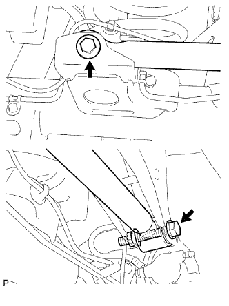

REAR LATERAL CONTROL ROD > INSTALLATION |
| 1. TEMPORARILY INSTALL REAR LATERAL CONTROL ROD ASSEMBLY |
Temporarily install the lateral control rod assembly with the bolt and nut.
Temporarily install the bolt.
| 2. STABILIZE SUSPENSION |
Lower the vehicle.
Bounce the vehicle up and down several times to stabilize the suspension.
| 3. TIGHTEN REAR LATERAL CONTROL ROD ASSEMBLY |
|  |
Tighten the 2 bolts.